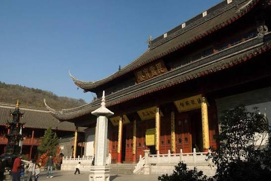
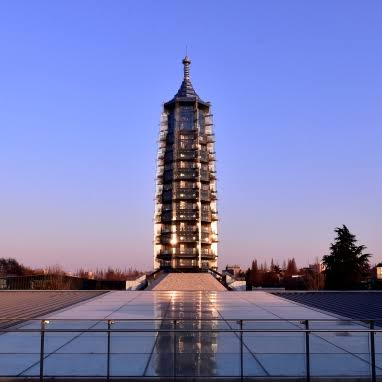
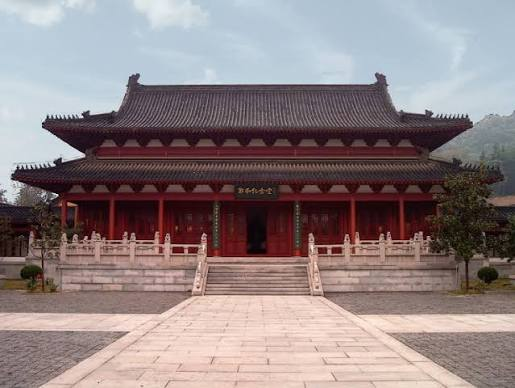
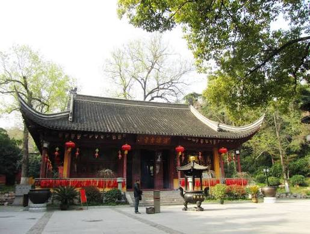

1 · Relics
Relic containers and pagodas
Relics made distant sacred history present. A pagoda gave that presence a vertical form, a centre of ritual attention, and a landmark visible from a distance.
Objects · Places · Public life
Buddhism became visible in Nanjing through things that people could enter, touch, carry, see, repair, donate, and remember.
Where Buddhism became visible
An object is never only an object. Its meaning comes from the ritual, people, and place around it.
The examples below use Nanjing’s temple landscapes as entry points. Some objects survive; others are known through inscriptions, archaeology, or later reconstructions.




Five material forms
These forms connected belief to place without reducing Buddhism to decoration.
1 · Relics
Relics made distant sacred history present. A pagoda gave that presence a vertical form, a centre of ritual attention, and a landmark visible from a distance.
2 · Images
Images gave doctrine a body that could be approached, honoured, copied, and placed into a wider story about protection, compassion, wisdom, or liberation.
3 · Inscriptions
Inscriptions named founders, donors, renovations, teachers, and miracles. They preserved a claim about what the place meant and who had helped make it.
4 · Ritual equipment
Ritual objects organized sound, light, scent, offering, and movement. They made a ceremony collective and gave time a repeated structure.
5 · Buildings
Architecture controlled arrival and movement. A gate, courtyard, hall, or mountain path showed that religious experience was arranged through space.
6 · Records
Temple registers, biographies, gazetteers, and copied scriptures carried a site’s memory beyond its walls and allowed later people to rebuild its story.
A useful question
A relic pagoda, an image in a cave, and a stele did not address exactly the same audience. Some required ritual expertise; others could be encountered by pilgrims, donors, travellers, or local residents.
A second question
An object moved from a mountain cave to a museum, or from a temple hall to an archaeological park, does not lose all meaning—but its audience and the way it is explained change.
Follow the evidence: Begin with the Qixia inscription translations, then compare the material setting on the temple map. The next page explains how an image communicates meaning through form and context.